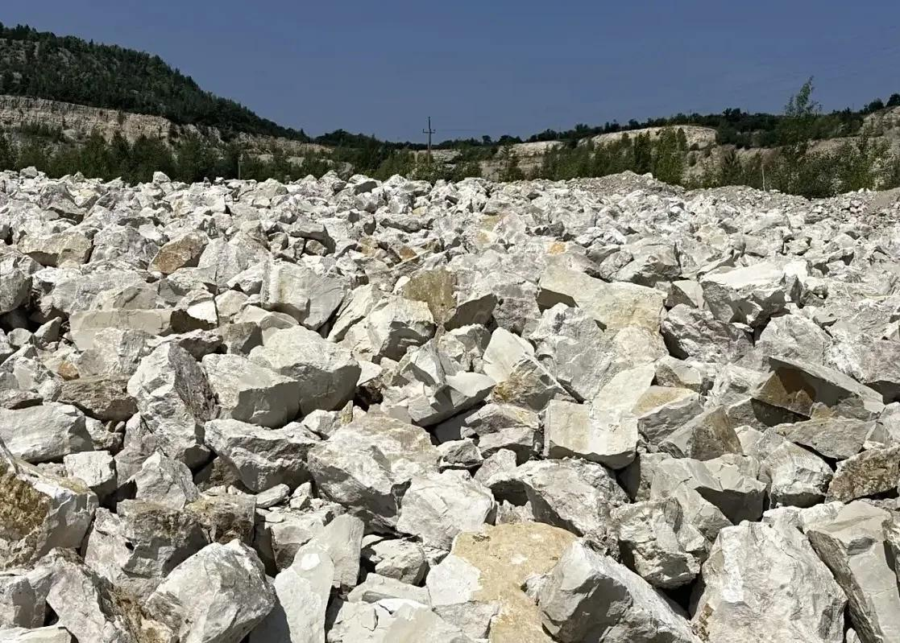

Бутовый камень
Бутовый камень — востребованный в строительстве и отделке природный материал, представляющий собой куски и обломки осадочных горных пород. Его добывают в карьерах при разработке месторождений гранита, известняка, песчаника и других твердых пород. Благодаря прочности и эстетичным свойствам бут широко используется при возведении фундаментов, подпорных стен, заборов, инженерных сооружений, а также в декоративной отделке зданий и ландшафтном дизайне.
Применение
Бутовый камень широко используется в строительстве и ландшафтном дизайне. Он служит надежным материалом при возведении фундаментов несущих конструкций, кладке стен, строительстве дорог, подпорных стен и заборов. Благодаря высокой прочности и водостойкости бут также применяется в гидротехнических сооружениях — для строительства плотин, мостов, дамб, каналов, колодцев и оснований под бутовые фундаменты.
Бутовый камень особенно эффектно смотрится в декоративных проектах — при отделке фонтанов, бассейнов, искусственных прудов, цветников и газонов. Он гармонично вписывается в природный ландшафт. Для заборов и стен используют преимущественно плоские плиты, напоминающие кирпич по форме. Из них выкладывают конструкции и ограждения, придавая им прочность и эстетичный вид в классическом или старинном стиле.
Фракции
Поставляем камень двух размерных групп:
- 150-300 мм — более универсальная фракция, подходит для большинства задач: фундаменты, подпорные стенки, ландшафтные работы.
- 150-500 мм — крупный камень для габионов, берегоукрепления и объектов, где нужна повышенная масса и устойчивость конструкции.
Почему берут у нас
- Официальный дилер АО «Сокское Карьероуправление» — без наценки посредников
- ТТН, паспорт качества и сертификат соответствия ГОСТ на каждую партию
- Доставка автотранспортом (до 40 т) и водным транспортом
Укажите нужный объём — рассчитаем точный вес и стоимость доставки бутового камня.
Рассчитать доставку →